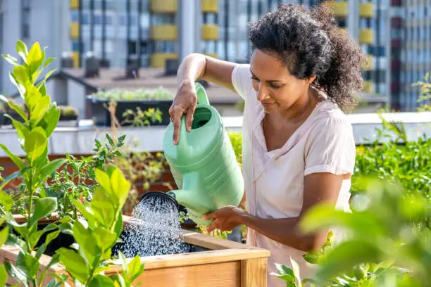
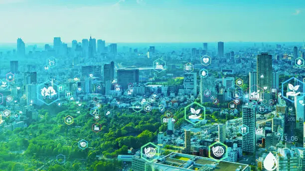

Inovações no Campo
No campo, tecnologias como drones e sensores ajudam na produção de alimentos com menos desperdício e mais eficiência.

Como o campo e a cidade se conectam através da inovação
No campo, tecnologias como drones e sensores ajudam na produção de alimentos com menos desperdício e mais eficiência.
Nas cidades, hortas urbanas e energia limpa ajudam a melhorar a qualidade de vida e aproximar as pessoas da natureza.
Quando o campo e a cidade trabalham juntos, o futuro se torna mais verde, saudável e inteligente para todos.
